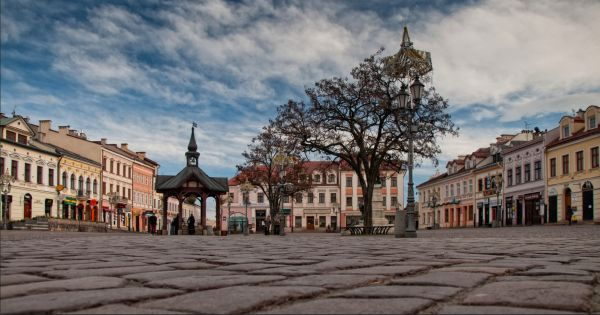
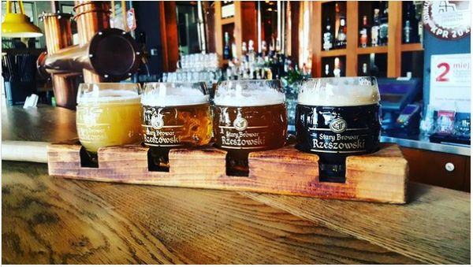
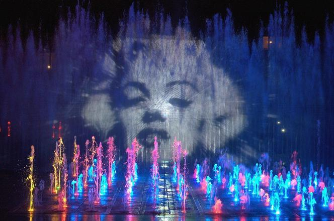
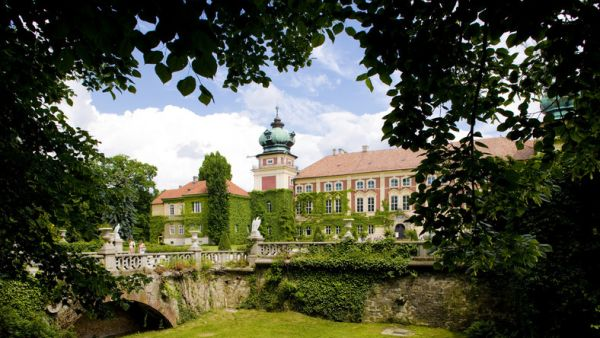

Rzeszów is the largest city in southeastern Poland, with a population of just under 200,000. Rzeszów has one of the most beautiful Old Town Squares
in all of Poland and it sits in the Subcarpathian province (Podkarpackie in Polish), which borders Ukraine to the east and Slovakia to the south.
Within the historic city of Rzeszów there are fascinating things to see and do; here are a few:
A stroll along the Marker Square (Stary Rynek)

One of the most adorable old town squares in Poland. In non-pandemic times the square is a buzz of activity with lots of bars, restaurants and
cafes, including an impressive local brew house and a stylish City Hall.
Try the sample board at Stary Browar Rzeszowski

Stary Browar Rzeszowski is a local brewery with some lovely craft beers on tap. You might go in and try a pint of each, but if you don’t feel
like spending all your evening there, you can try a sample board of the brewery’s four best beers.
Chill and take a break at the Rzeszów Multimedia Fountain

When you’ve been strolling around the city and find yourself in the proximity of the Multimedia Fountain, I would definitely recommend visiting it. Again,
pandemic caused some disturbances, and the usual summer evening light shows at the fountain are not certain at the moment. However, it does offer a nice
stroll around the nearby castle.
Visit a gorgeous Łańcut Castle, it’s gardens and park

If you happen to rent a car for your trip (or if not you might want for this) a Łańcut Castle is a must see. This early baroque aristocratic residence was
refurbished in the late 18th century to become a lavish artistic salon, which played host to such famous guests as Louis XIII of France and Emperor Franz Jozef
of Austria. The park and gardens around the castle are equally beautiful and are worth a visit. What is more, during the summer, students from a local musical
school often practice their violin (among other instruments) in the park providing a lovely soundtrack for a stroll.
Rzeszów has lots of green spaces, but three parks in particular make for great strolls. Down by the river is the Park of Culture and Recreation (Kultury i
Wypoczynku in Polish) and Olszynki Park. The Park of Culture and Recreation includes a boat with local man, Pomnik Stanisława Nitki, a legendary city resident,
who was rumoured to have walked across the river by rope. The World Wars and Communist times are remembered in the city’s Solidarity Park. All three parks are
within fifteen minutes’ walk of each other.
Rzeszów’s prime attraction is this 396m-long route linking 25 old cellars beneath the central market square. The circuit took 17 years to complete and restore.
The cellars date from the 14th to 18th centuries and reach a depth of up to 10m. The 45-minute guided tours illuminate some of Rzeszów's history through the artefacts
displayed, all found down here. Three English-language tours depart daily through the week.